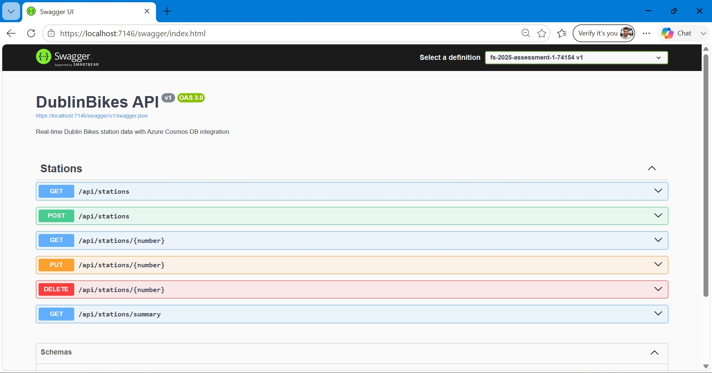
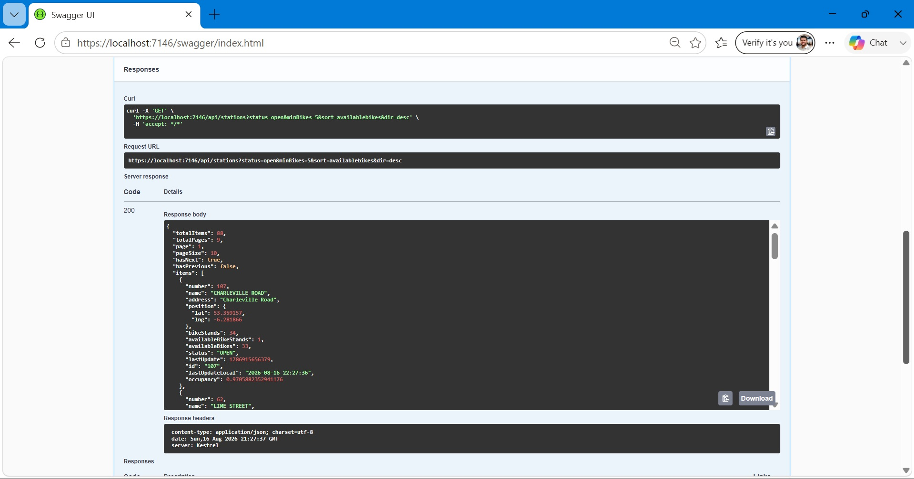
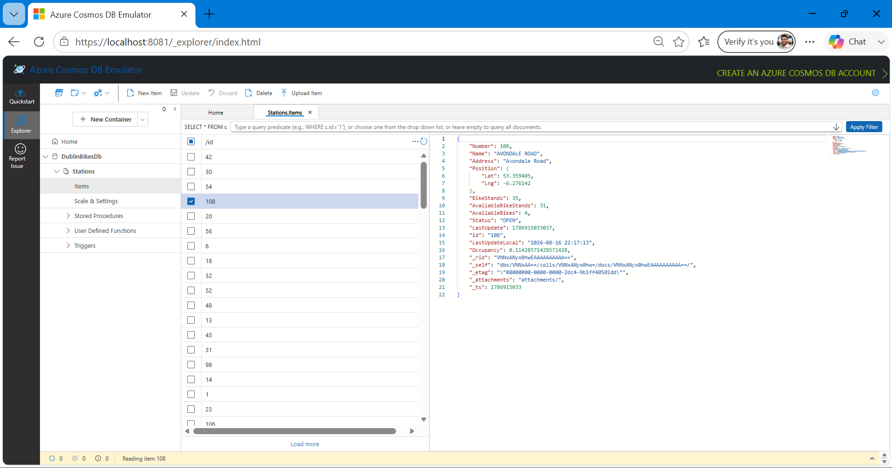

Overview
A .NET 8 Web API that tracks real-time station availability across Dublin's bike-share network, backed by Azure Cosmos DB. Built to go beyond a simple CRUD app — with a background service simulating live data, full test coverage, and an automated CI/CD pipeline.
Real-Time Data, Verified
Most demo APIs serve static, unchanging data. This one doesn't. A background service (IHostedService) runs continuously alongside the API, picking up every station in the database and updating its bike counts, stand availability, and timestamp automatically every 15 seconds — simulating the kind of live movement a real bike-share network would have, without any manual intervention.

Building the background service was the easy part. The harder — and more important — part was proving it actually worked, rather than just assuming it did because the code looked right. So I verified it end-to-end: I opened the same station's document directly in Azure Cosmos DB's Data Explorer, recorded its values, waited 20 seconds without touching anything, and reopened it. The available bike count, stand availability, and last-updated timestamp had all changed on their own.
That small verification step is the difference between "this should work" and "this does work" — and it's a habit I try to carry into everything I build, not just this project.
Filtering, Sorting & Pagination
Real APIs rarely just return "everything" — they let the consumer narrow down exactly what they need. This one supports filtering by station status (OPEN/CLOSED) and a minimum number of available bikes, free-text search across station name and address, and sorting by any field in either direction — all of it combinable in a single request, like ?status=OPEN&minBikes=5&sort=availableBikes&dir=desc.

Results come back paginated, with a clear response shape — totalItems, totalPages, hasNext, hasPrevious — so a frontend consuming this API always knows exactly where it stands without guessing.
On top of the read side, the API supports full CRUD: creating a station returns 201 Created with a proper location header, trying to create a duplicate returns 409 Conflict instead of silently failing, invalid input returns 400 Bad Request with clear validation errors, and looking up a station that doesn't exist returns a clean 404. Every endpoint is documented and testable directly through Swagger/OpenAPI, so anyone evaluating the API can try it without writing a single line of client code.
Live on Azure Cosmos DB
Station data is persisted in Azure Cosmos DB — a NoSQL, globally distributed database — rather than a static JSON file, so the API reflects a real, continuously changing dataset instead of a fixed fixture that never moves. The project actually supports two interchangeable backends behind the same IStationService interface: a simple file-based mode for quick local testing, and the Cosmos DB mode for anything closer to a real deployment. Switching between them is a single configuration change — the rest of the API doesn't need to know or care which one is active.

Locally, I ran this against the official Azure Cosmos DB Emulator — the same emulator Microsoft ships for development — which let me build and test the entire data layer without needing a live Azure subscription while iterating. The screenshot above shows a real station document straight from that database: not a mock, not a hardcoded sample, but the actual record the API reads from and the background service writes to.
Tech Stack
C# · .NET 8 · Azure Cosmos DB · Swagger/OpenAPI · xUnit · GitHub Actions